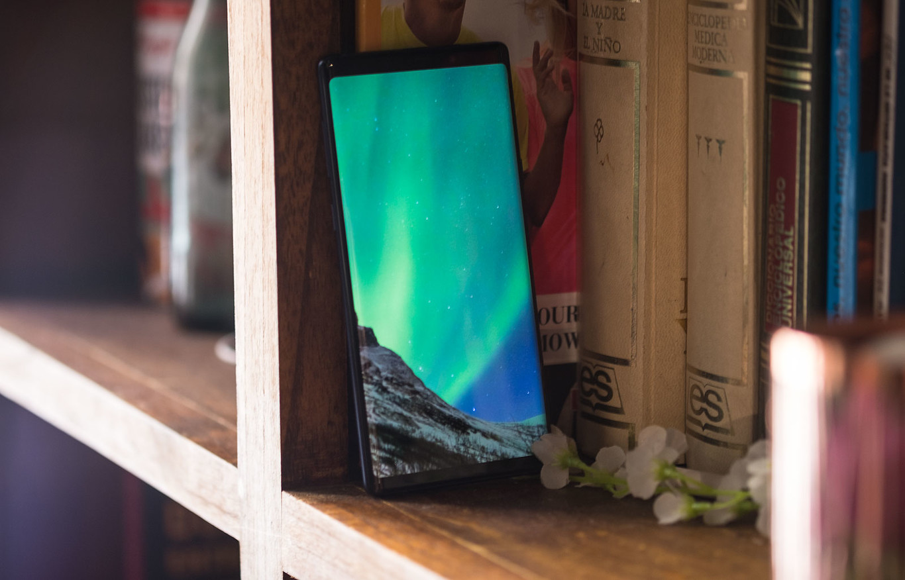

labDevices


Samsung 'Beyond X': el Galaxy para conmemorar el décimo aniversario llegará con pantalla de 6,7", seis cámaras y 5G, según el WSJ
Samsung prepara algo grande para la celebración del décimo aniversario de la gama Galaxy. Del que sería el Galaxy S10 se ha rumoreado que vendrá en tres versiones distintas, pero además ahora conocemos que Samsung lanzaría un modelo especial de nombre en clave 'Beyond X', un modelo que según el Wall Street Journal llegaría con una pantalla de 6,7 pulgadas, seis cámaras y compatibilidad con 5G.
Los modelos estándar del Galaxy S10 ofrecerían pantallas que irían de las 5,8 a las 6,4 pulgadas, unos tamaños bastante similares a lo que se ofrece ahora en la gama Galaxy S9. Adicionalmente, se incorporarían cámaras dobles y triples en la parte trasera. Pero este Samsung Galaxy 'Beyond X' sería el modelo que atraería todas las miradas, de manera equivalente a lo que ocurrió con el lanzamiento del iPhone X por parte de Apple.